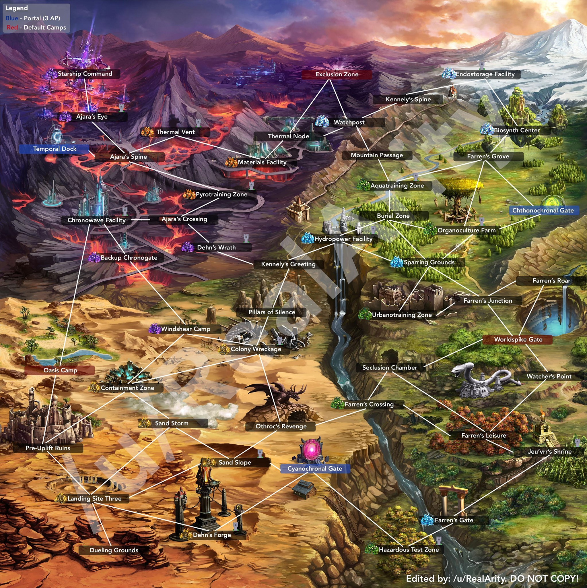

Guild Raid Map
BF Guild Maps
x
Secured
•
•
•
Brave Frontier Wiki

What is This?
This is part of my history when playing as guild raid regulars in Brave Frontier.
Since brave frontier had been shutdown with the last season 24, so yeah QAQ
这是什么？
这是我在玩Brave Frontier公会战的记录
既然游戏本体都倒闭了，我想这份公会笔记应该可以拿出来分享一下了 QAQ
Guild Raid Seasons (公会战记录)
Season 21
Season 22
Season 23
Season 24